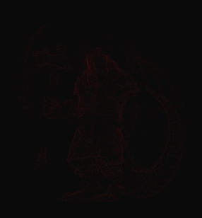
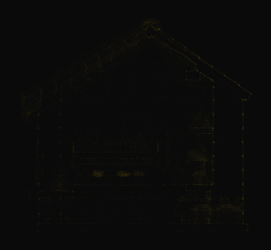

Move from prompt or reference image into 3D drafts fast
Start with text-to-3D or image-to-3D, compare draft bundles, retry quickly, and continue the best result straight into refinement.
- Text to 3D
- Image to 3D
- Draft picks
Generate images, videos and printable 3D models from prompts or uploads. Refine, convert, export or print from one guided workspace.





Fresh public creations from the TimrX community, pulled into the homepage as proof before visitors open the workspace.
Generate, refine, animate, share and export from the same browser workspace.
Start with text-to-3D or image-to-3D, compare draft bundles, retry quickly, and continue the best result straight into refinement.
Use prompt-led and reference-based image workflows across OpenAI, Imagen, FLUX.2 Pro, Ideogram, Recraft, and Nano Banana.
Build text-to-video clips, animate source images, and create transition shots with Veo 3.1 and Seedance inside the same workspace.
Use remesh presets, advanced controls, texture prompts, and PBR material generation to move rough output into cleaner deliverables.
Auto-rig character models, load the animation library, choose actions, and reuse rigged assets from history when you need to reanimate.
Reopen work from history, remix community posts, run print readiness checks, preview in AR, and convert assets for creator, AR, and 3D print delivery.
Choose an example prompt, inspect the generated 3D result, then open the workspace when you are ready to create your own.
TimrX uses credits for AI generation and selected refinement tools. Start small, then add more when your workflow grows. Billing still lives in the Dashboard.
View Pricing →TimrX is an AI creative platform for generating product visuals, cinematic video clips and printable 3D models from text prompts, image references or existing files. Create, refine, organize and export assets without moving between disconnected tools.
Image, Model, Remesh, Texture, Rig, Animate and Video in one browser workspace.
OpenAI, Imagen, FLUX.2 Pro, Ideogram, Recraft V4 and Nano Banana for concept art, product visuals, brand graphics and vector-ready output.
Create text-to-video clips, animated image sequences, transition shots and motion-directed videos from still or text inputs.
Generate 3D models, then remesh, texture, rig, animate, inspect topology and prepare files for 3D printing.
Preview, share and convert across creator, game asset, AR and 3D print formats.
Use public creations for inspiration, reopen your history and publish selected work to the TimrX community.
TimrX supports providers including OpenAI, Google Imagen, FLUX.2 Pro, Ideogram, Recraft, Nano Banana, Veo, Seedance and Meshy, with exports across GLB, GLTF, OBJ, STL, FBX import workflows and USDZ delivery.
Short product notes, workflow guides and practical articles for creators working with AI images, video and 3D assets.
Loading article excerpt
Loading article excerpt
Loading article excerpt
Everything you need before creating your first asset.
Images, short videos, textured 3D models and printable assets from prompts, reference images or existing files.
Yes. Use print checks and export workflows for STL and 3MF, then prepare the result for your slicer or print service.
Core workflows support STL, OBJ, GLB, GLTF, USDZ and 3MF. The converter provides additional format paths.
No. TimrX is designed to generate, inspect, refine and export assets directly in your browser.
Generation and selected refinement actions use credits. Choose a pack based on the tools and output volume you need.
Yes. Workflows support content creation, game concepts, product visualisation, prototypes and print-ready ideas.
Explore the company behind TimrX, read product documentation, and find answers about AI generation, credits, exports, account access and supported workflows.
Generate, refine and export without leaving the browser.